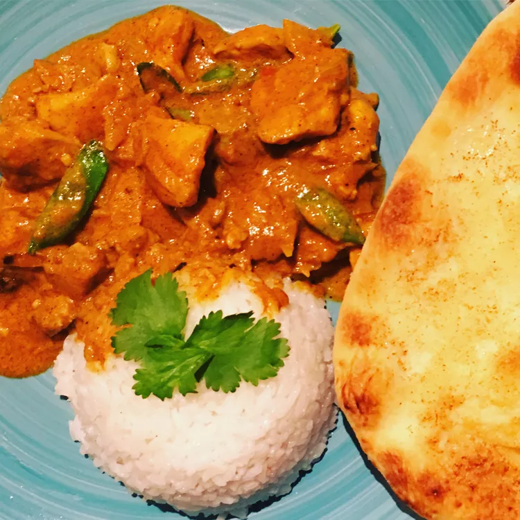

Butter-Chicken

Butter chicken, traditionally known as murgh makhani
is an Indian dish originating in Delhi.
It is a type of curry made from chicken with a spiced tomato and butter (makhan) sauce.
Its sauce is known for its rich texture. It is similar to chicken tikka masala,
which uses a tomato paste.
Ingredients
- 2 teaspoons garam masala
- 2 teaspoons tandoori masala powder
- 2 teaspoons Madras curry powder
- 1 teaspoon ground cumin
- ½ teaspoon ground cardamom
- ½ teaspoon ground cayenne pepper
- salt and ground black pepper to taste
- 1 ½ pounds boneless, skinless chicken thighs, cut into bite-size pieces
- 3 tablespoons butter, divided
- 1 yellow onion, chopped
- 4 cloves garlic, minced
- 1 tablespoon lemon juice
- 2 teaspoons chopped fresh ginger
- 1 cup tomato puree
- 1 cup half-and-half
- ¼ cup plain yogurt
- ⅓ cup cashews
- 1 bunch fresh cilantro, stems removed